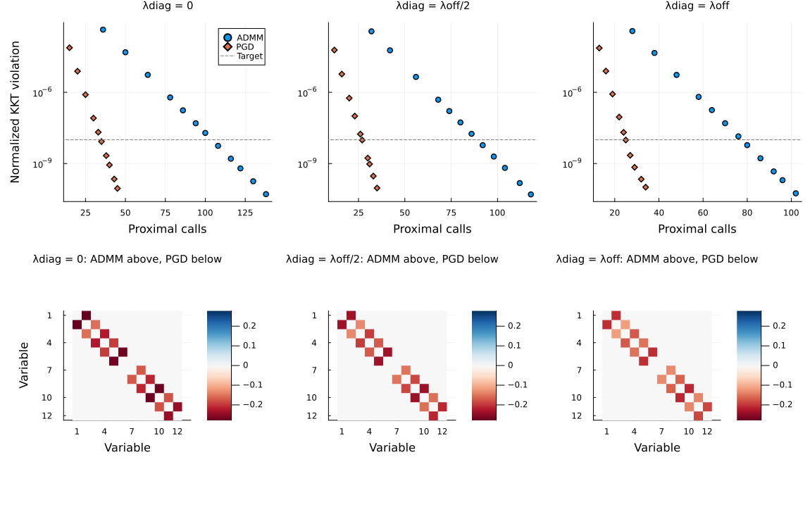

Graphical lasso: ADMM and proximal gradient

ADMM and proximal gradient descent (PGD, also called G-ISTA for this problem) fit the graphical-lasso estimator
\[\min_{\Theta=\Theta^\top\succ0}\; P(\Theta) = -\log\det\Theta+\operatorname{tr}(S\Theta) +\lambda_{\rm off}\sum_{i\ne j}|\Theta_{ij}|+\lambda_{\rm diag}\sum_i|\Theta_{ii}|\]
on one sample covariance S and one off-diagonal weight λoff, at three diagonal weights λdiag. The Graphical lasso page explains the model. See the ADMM contract and matrix PGD contract.
Two routes to one objective
Matrix ADMM accepts the full weight matrix Λfull with λdiag on its diagonal. Matrix PGD also accepts diagonal weights (PGD-06); this comparison gives it the equivalent shifted problem instead: it receives Sshift = S + λdiag*I and the weights Λzero with a zero diagonal. For symmetric positive-definite Θ, tr(SshiftΘ) = tr(SΘ) + λdiag Σᵢ Θᵢᵢ and Θᵢᵢ > 0. Mathematically, the shifted problem therefore has the objective P(Θ) at every such Θ, not only at the minimizer. The stored Sshift is rounded, and the checks below allow for that. Every returned estimate is judged from the original S, λoff and λdiag, not from the arguments the solver received.
Different λdiag define different estimators, so their objective values are not a measure of quality. Only the two solvers at the same λdiag are compared with each other.
One Gaussian sample and one penalty
Rows of randn(n, p) * U have covariance U' * U = inv(Θ_true), where Θ_true is tridiagonal with p - 1 edges. The centered sample covariance uses divisor n. The penalty sums over the full matrix, so it counts each off-diagonal pair twice.
using LinearAlgebra, Printf, Random, ProximalBase, ProximalSolvers
n, p = 240, 12
Θ_true = Matrix(SymTridiagonal(fill(1.4, p), fill(-0.38, p - 1)))
Σ_true = inv(Θ_true)
U = cholesky(Symmetric(Σ_true)).U
X = randn(Xoshiro(444), n, p) * U
X .-= sum(X; dims=1) ./ n
S = Matrix(Symmetric(X' * X / n))
λoff = 0.12
start = Matrix{Float64}(I, p, p);For each λdiag, build Λfull, Λzero and Sshift. Sshift must be finite and exactly symmetric, and it must differ from S only on the diagonal. Copies of S and of these arrays are compared with them after all solves.
function inputs(λdiag)
Sshift = S + λdiag * I
@assert all(isfinite, Sshift) && Sshift == Sshift'
@assert all(Sshift[i, j] == S[i, j] for j in 1:p for i in 1:p if i != j)
Λfull, Λzero = fill(λoff, p, p), fill(λoff, p, p)
Λfull[diagind(Λfull)] .= λdiag
Λzero[diagind(Λzero)] .= 0.0
(; λdiag, Sshift, Λfull, Λzero)
end
policies = map(inputs, (0.0, λoff / 2, λoff))
stored = (S=copy(S), policies=deepcopy(policies));Check accuracy from the returned matrix
From a returned Θ and the original data, check finiteness, exact symmetry and Cholesky, and compute the objective dot(S, Θ) - logdet(Θ) plus both penalties. Set G = S - inv(Θ). The KKT violation is |Gᵢᵢ + λdiag| on the diagonal, |Gᵢⱼ + λoff*sign(Θᵢⱼ)| at a nonzero off-diagonal entry and max(|Gᵢⱼ| - λoff, 0) at an exact zero. Its maximum, divided by max(1, maximum(abs, S), λoff, λdiag), is the normalized KKT violation. The allowance 32p * eps() * (1 + |logdet| + |trace| + penalty) is what the checks below use for rounding in the Float64 objective and, for PGD, in the stored Sshift.
function diagnostics(Θ, λdiag)
@assert Θ == Θ' && all(isfinite, Θ)
factor = cholesky(Symmetric(Θ))
G = S - inv(factor)
violation(i, j) = i == j ? abs(G[i, i] + λdiag) :
iszero(Θ[i, j]) ? max(abs(G[i, j]) - λoff, 0.0) :
abs(G[i, j] + λoff * sign(Θ[i, j]))
kkt_abs = maximum(violation(i, j) for j in 1:p, i in 1:p)
scale = max(1.0, maximum(abs, S), λoff, λdiag)
logdet_Θ, trace = logdet(factor), dot(S, Θ)
penalty = λoff * sum(abs(Θ[i, j]) for j in 1:p for i in 1:p if i != j) + λdiag * sum(abs, diag(Θ))
spectrum = eigvals(Symmetric(Θ))
(; primal=trace - logdet_Θ + penalty, allowance=32p * eps() * (1 + abs(logdet_Θ) + abs(trace) + penalty),
kkt=kkt_abs / scale, kkt_abs, eigmin=first(spectrum), eigmax=last(spectrum))
end;The dual maximizes logdet(W) + p over symmetric positive-definite W with Wᵢᵢ = Sᵢᵢ + λdiag and |Wᵢⱼ - Sᵢⱼ| ≤ λoff off the diagonal, as on the Graphical lasso page. Build a candidate in BigFloat by clipping the off-diagonal deviations of inv(Θ) from S to this box. Check the diagonal and the box with rational arithmetic on the stored values, then check a BigFloat Cholesky factorization. Only if both pass is primal - (logdet(W) + p) reported, as a numerically validated dual gap; otherwise the result is missing. The affine checks are exact, but the Cholesky test and the value use rounded BigFloat arithmetic, so the gap is not a rigorous certificate.
function dual_gap(Θ, λdiag, primal)
Sb, off = BigFloat.(S), BigFloat(λoff)
inverse = inv(BigFloat.(Θ))
W = copy(Sb)
W[diagind(W)] .+= BigFloat(λdiag)
for j in 2:p, i in 1:j-1
W[i, j] = W[j, i] = Sb[i, j] + clamp(inverse[i, j] - Sb[i, j], -off, off)
end
q(x) = Rational{BigInt}(x)
feasible = all(q(W[i, i]) == q(S[i, i]) + q(λdiag) for i in 1:p) &&
all(abs(q(W[i, j]) - q(S[i, j])) <= q(λoff) for j in 2:p for i in 1:j-1)
feasible || return missing
factor = cholesky(Symmetric(W); check=false)
issuccess(factor) ? Float64(BigFloat(primal) - (logdet(factor) + p)) : missing
end;Sweep the solver tolerances
Each fit starts from a fresh copy of the identity. ADMM uses abstol = reltol = t, and PGD uses gradtol = t with ftol = 0. For each policy and solver, t runs from loose to tight on a grid with approximately half-decade steps near the target. The target is a normalized KKT violation of 1e-8 computed independently as above. The matched fit is the first setting in a sweep that reaches it, so each matched fit is at or below the target, though the solvers' tolerance settings differ. The script prints not reached for a sweep that does not, and then fails. The printed converged is each solver's own flag for the inputs it received, defined in ADM-04 and PGD-08; it is not the criterion here.
function fit(route, policy, t)
f, g, method, options = route === :ADMM ?
(LogDetLoss(S), NormL1(1.0, policy.Λfull), ADMMSolver(; abstol=t, reltol=t),
ProximalOptions(; maxiter=8000)) :
(LogDetLoss(policy.Sshift), NormL1(1.0, policy.Λzero), ProximalGradientDescent(),
ProximalOptions(; maxiter=8000, gradtol=t, ftol=0))
Θ = copy(start)
elapsed = @elapsed result = solve!(Θ, f, g, method, options)
(; route, t, Θ, result, elapsed, d=diagnostics(Θ, policy.λdiag))
end
println("start: identity matrix of size ", p, ", a fresh copy for each fit")
target = 1e-8
tolerances = (ADMM=[1e-4, 1e-5, 1e-6, 1e-7, 3e-8, 1e-8, 3e-9, 1e-9, 3e-10, 1e-10, 3e-11, 1e-11],
PGD=[1e-4, 1e-5, 1e-6, 1e-7, 3e-8, 1e-8, 3e-9, 1e-9, 3e-10, 1e-10])
sweeps = [(policy=policy,
ADMM=[fit(:ADMM, policy, t) for t in tolerances.ADMM],
PGD=[fit(:PGD, policy, t) for t in tolerances.PGD]) for policy in policies]
indices = [(ADMM=findfirst(r -> r.d.kkt <= target, s.ADMM), PGD=findfirst(r -> r.d.kkt <= target, s.PGD))
for s in sweeps]
for (s, k) in zip(sweeps, indices), route in (:ADMM, :PGD)
isnothing(k[route]) ? @printf("λdiag = %.2f %s: not reached\n", s.policy.λdiag, route) :
@printf("λdiag = %.2f %s: reached at setting %.0e, KKT %.2e\n", s.policy.λdiag, route,
s[route][k[route]].t, s[route][k[route]].d.kkt)
end
@assert all(!isnothing(k[route]) for k in indices for route in (:ADMM, :PGD)) "a sweep did not reach the target"
cases = map(sweeps, indices) do s, k
(policy=s.policy, matched=(ADMM=s.ADMM[k.ADMM], PGD=s.PGD[k.PGD]),
tightest=(ADMM=last(s.ADMM), PGD=last(s.PGD)))
end;start: identity matrix of size 12, a fresh copy for each fit
λdiag = 0.00 ADMM: reached at setting 1e-09, KKT 5.57e-09
λdiag = 0.00 PGD: reached at setting 1e-08, KKT 8.43e-09
λdiag = 0.06 ADMM: reached at setting 1e-09, KKT 5.93e-09
λdiag = 0.06 PGD: reached at setting 1e-08, KKT 9.73e-09
λdiag = 0.12 ADMM: reached at setting 1e-09, KKT 5.95e-09
λdiag = 0.12 PGD: reached at setting 1e-08, KKT 9.78e-09Every fit, including the timed reruns below, must be a finite positive-definite matrix whose reported minimum agrees with the original objective: within a relative 1e-12 for ADMM, which received the original problem, and within the allowance for PGD, which received the shifted one.
function check_fit(run)
@assert run.d.eigmin > 0
@assert run.route === :ADMM ? isapprox(run.result.minimum, run.d.primal; rtol=1e-12) :
abs(run.result.minimum - run.d.primal) <= run.d.allowance
end
foreach(check_fit, (run for s in sweeps for route in (:ADMM, :PGD) for run in s[route]))Compare the two solvers at the same accuracy
At the matched and the tightest fits, the dual candidate must pass both checks, and its gap must lie between minus the allowance and the target scaled by max(1, |P|). The lower bound is weak duality up to rounding in the numerical gap: the Float64 primal, the BigFloat dual value and the conversion of the gap to Float64 are all rounded. A candidate that fails a check prints dual gap not validated with its policy, solver and stage before the assertion fails. At each policy, the objectives of the matched fits must agree within target * max(1, |P|) with P the objective of the PGD fit. Their largest entrywise difference is bounded from the KKT violations. For positive-definite A and B, ⟨inv(B) - inv(A), A - B⟩ ≥ ‖A - B‖_F² / (λmax(A) λmax(B)), and the subgradient of the penalty is monotone, so in exact arithmetic ‖A - B‖_F ≤ λmax(A) λmax(B) (‖R_A‖_F + ‖R_B‖_F). Here R is G plus a selected subgradient of the penalty, a signed matrix whose entry magnitudes equal the KKT violations, so ‖R‖_F ≤ p * max|R|. The script evaluates the bound in Float64. The tightest fits must agree entrywise to 1e-8 * max(1, largest entry of the PGD estimate) and have the same graph.
The graph has an edge for each pair i < j with |Θᵢⱼ| > display_threshold. This display threshold is distinct from the exact zeros that the penalty produces. Its true graph has the p - 1 tridiagonal edges. The true positives, false positives and false negatives below describe this one sample, and no recovery is asserted. Different policies fit different estimators. The two solvers at one policy have the same graph at the tightest fits, which the script asserts. The graph counts at the matched fits are descriptive: two matched entries can straddle the display threshold even when they differ by less than the bound.
display_threshold = 1e-6
true_graph = Set((i, i + 1) for i in 1:p-1)
graph(Θ) = Set((i, j) for j in 2:p for i in 1:j-1 if abs(Θ[i, j]) > display_threshold)
function validated_gap(run, λdiag, stage)
gap = dual_gap(run.Θ, λdiag, run.d.primal)
ismissing(gap) && @printf("λdiag = %.2f %s %s: dual gap not validated\n", λdiag, run.route, stage)
@assert !ismissing(gap) && -run.d.allowance <= gap <= target * max(1, abs(run.d.primal))
gap
end
for case in cases
for (stage, pair) in pairs((matched=case.matched, tightest=case.tightest)), run in pair
validated_gap(run, case.policy.λdiag, stage)
end
a, b = case.matched
Δobjective, Δentry = abs(a.d.primal - b.d.primal), maximum(abs, a.Θ - b.Θ)
bound = a.d.eigmax * b.d.eigmax * p * (a.d.kkt_abs + b.d.kkt_abs)
@assert Δobjective <= target * max(1, abs(b.d.primal)) && Δentry <= bound
ta, tb = case.tightest
@assert maximum(abs, ta.Θ - tb.Θ) <= 1e-8 * max(1, maximum(abs, tb.Θ)) && graph(ta.Θ) == graph(tb.Θ)
@printf("λdiag = %.2f: matched objective difference %.2e, entrywise difference %.2e (bound %.2e); tightest entrywise difference %.2e\n",
case.policy.λdiag, Δobjective, Δentry, bound, maximum(abs, ta.Θ - tb.Θ))
endλdiag = 0.00: matched objective difference 1.78e-15, entrywise difference 7.95e-09 (bound 4.82e-07); tightest entrywise difference 1.06e-10
λdiag = 0.06: matched objective difference 3.55e-15, entrywise difference 8.76e-09 (bound 4.46e-07); tightest entrywise difference 9.76e-11
λdiag = 0.12: matched objective difference 1.78e-15, entrywise difference 7.49e-09 (bound 3.76e-07); tightest entrywise difference 8.11e-11Compare work at the same accuracy
One ADMM iteration makes two proximal calls: the logdet proximal operator, which uses an eigendecomposition, and the ℓ₁ proximal operator. PGD counts each attempted proposal as a backtracking trial. A trial calls the ℓ₁ proximal operator when its argument is finite, and the solver evaluates the loss only when the resulting proposal is finite, exactly symmetric and passes Cholesky in the element type; an accepted step also evaluates a gradient (PGD-07, PGD-08). PGD's f_calls and grad_calls also each include one combined value and gradient evaluation at the start. Both solvers call the ℓ₁ proximal operator, while ADMM's proximal-call count also includes the logdet proximal operator, so the two totals count different operations. The times are the minimum of three warmed solves of the matched setting, each from a fresh start and checked like the sweep fits. They illustrate one machine and one problem, and they do not show a speedup.
function timed(route, policy, t)
runs = [fit(route, policy, t) for _ in 1:3]
foreach(check_fit, runs)
1000 * minimum(run.elapsed for run in runs)
end
rows = [(; case.policy.λdiag, route, run=case.matched[route],
ms=timed(route, case.policy, case.matched[route].t))
for case in cases for route in (:ADMM, :PGD)]
println("\nλdiag solver setting converged KKT(norm) KKT(abs) objective |minimum - objective| gap eigmin")
for (; λdiag, route, run) in rows
r, d = run.result, run.d
@printf("%.2f %-6s %.0e %-9s %.2e %.2e %.10f %.2e %10.2e %.4f\n",
λdiag, route, run.t, r.converged, d.kkt, d.kkt_abs, d.primal, abs(r.minimum - d.primal),
validated_gap(run, λdiag, :matched), d.eigmin)
end
println("\nλdiag solver iterations prox_calls f_calls grad_calls backtracks r_norm s_norm illustrative_ms")
for (; λdiag, route, run, ms) in rows
r, admm = run.result, route === :ADMM
@printf("%.2f %-6s %-10d %-10d %-7s %-10s %-10s %-8s %-8s %.2f\n", λdiag, route,
r.iterations, r.prox_calls, admm ? "-" : r.f_calls, admm ? "-" : r.grad_calls,
admm ? "-" : r.backtrack_steps, admm ? @sprintf("%.1e", r.r_norm) : "-",
admm ? @sprintf("%.1e", r.s_norm) : "-", ms)
end
println("\nλdiag solver exact zeros among the ", p * (p - 1) ÷ 2, " pairs true positives false positives false negatives",
" (edges: |Θᵢⱼ| > ", display_threshold, ")")
for (; λdiag, route, run) in rows
edges = graph(run.Θ)
@printf("%.2f %-6s %-31d %-14d %-15d %d\n", λdiag, route,
count(iszero(run.Θ[i, j]) for j in 2:p for i in 1:j-1), length(intersect(edges, true_graph)),
length(setdiff(edges, true_graph)), length(setdiff(true_graph, edges)))
end
@assert S == stored.S && policies == stored.policies && start == Matrix(1.0I, p, p)
λdiag solver setting converged KKT(norm) KKT(abs) objective |minimum - objective| gap eigmin
0.00 ADMM 1e-09 true 5.57e-09 5.57e-09 9.7389009845 0.00e+00 2.25e-16 0.7957
0.00 PGD 1e-08 true 8.43e-09 8.43e-09 9.7389009845 0.00e+00 2.00e-15 0.7957
0.06 ADMM 1e-09 true 5.93e-09 5.93e-09 10.6026595070 0.00e+00 -5.67e-16 0.7612
0.06 PGD 1e-08 true 9.73e-09 9.73e-09 10.6026595070 1.78e-15 2.11e-09 0.7612
0.12 ADMM 1e-09 true 5.95e-09 5.95e-09 11.4055786492 1.78e-15 3.71e-11 0.7294
0.12 PGD 1e-08 true 9.78e-09 9.78e-09 11.4055786492 1.78e-15 5.54e-16 0.7294
λdiag solver iterations prox_calls f_calls grad_calls backtracks r_norm s_norm illustrative_ms
0.00 ADMM 54 108 - - - 7.6e-10 1.0e-08 0.89
0.00 PGD 35 35 36 36 35 - - 0.16
0.06 ADMM 46 92 - - - 1.1e-09 1.1e-08 0.73
0.06 PGD 27 27 28 28 27 - - 0.12
0.12 ADMM 40 80 - - - 1.8e-09 1.1e-08 0.65
0.12 PGD 24 25 26 25 25 - - 0.11
λdiag solver exact zeros among the 66 pairs true positives false positives false negatives (edges: |Θᵢⱼ| > 1.0e-6)
0.00 ADMM 56 10 0 1
0.00 PGD 56 10 0 1
0.06 ADMM 56 10 0 1
0.06 PGD 56 10 0 1
0.12 ADMM 56 10 0 1
0.12 PGD 56 10 0 1Reading the figure
Each top panel plots the independent normalized KKT violation of every fit in a sweep against its proximal calls, and the dashed line marks the target. The three panels share their vertical limits. Each marker is a separate solve from the identity, so the markers are not joined. Each heatmap shows ADMM's matched estimate above the diagonal and PGD's below it, with the diagonal set to zero for display. The three heatmaps share one symmetric color scale. Each marker pairs a solver's reported proximal calls with the script's independent KKT violation, floored at eps(). The off-diagonal heatmap entries are the returned estimates; the script adds the target line and the zeroed display diagonal. The documentation build runs the plotting lines. The script alone runs the same calculations and checks without loading Plots.
using Plots
labels = ("λdiag = 0", "λdiag = λoff/2", "λdiag = λoff")
ylimits = extrema(max(run.d.kkt, eps()) for s in sweeps for route in (:ADMM, :PGD) for run in s[route])
work = map(enumerate(sweeps)) do (k, s)
panel = plot(; yscale=:log10, ylims=(ylimits[1] / 2, 2 * ylimits[2]), xlabel="Proximal calls",
ylabel=k == 1 ? "Normalized KKT violation" : "", title=labels[k], legend=k == 1 ? :topright : false)
for route in (:ADMM, :PGD)
scatter!(panel, [run.result.prox_calls for run in s[route]], [max(run.d.kkt, eps()) for run in s[route]];
label=string(route), marker=route === :ADMM ? :circle : :diamond)
end
hline!(panel, [target]; label="Target", linestyle=:dash, color=:gray)
end
shown = [[i < j ? case.matched.ADMM.Θ[i, j] : i > j ? case.matched.PGD.Θ[i, j] : 0.0 for i in 1:p, j in 1:p]
for case in cases]
limit = maximum(A -> maximum(abs, A), shown)
ticks = [1, 4, 7, 10, 12]
estimates = [heatmap(1:p, 1:p, A; title=labels[k] * ": ADMM above, PGD below", color=:RdBu,
clims=(-limit, limit), yflip=true, aspect_ratio=1, colorbar=true,
xlabel="Variable", ylabel=k == 1 ? "Variable" : "", xticks=ticks, yticks=ticks)
for (k, A) in enumerate(shown)]
figure = plot(work..., estimates...; layout=(2, 3), size=(1150, 720), titlefontsize=10,
left_margin=5Plots.mm, bottom_margin=4Plots.mm)
savefig(figure, "graphical_lasso_solvers.svg")
nothing